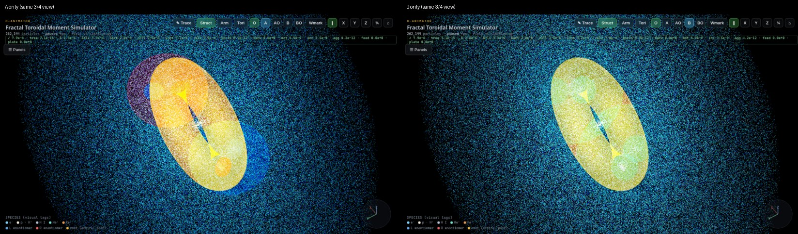
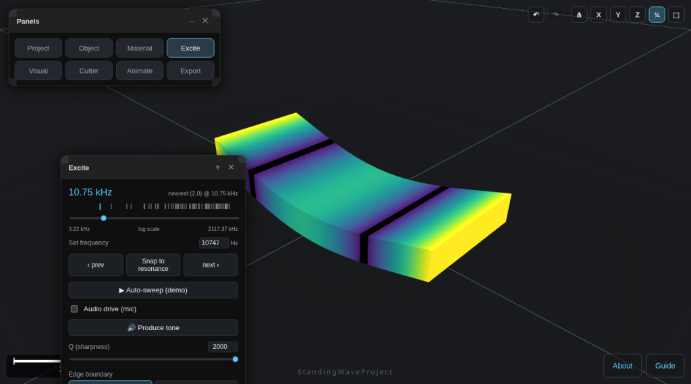
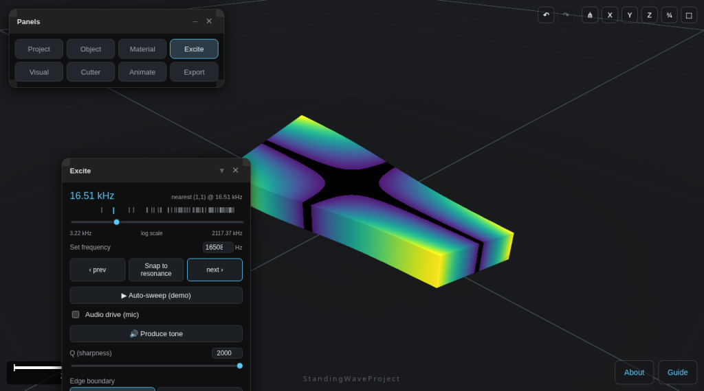
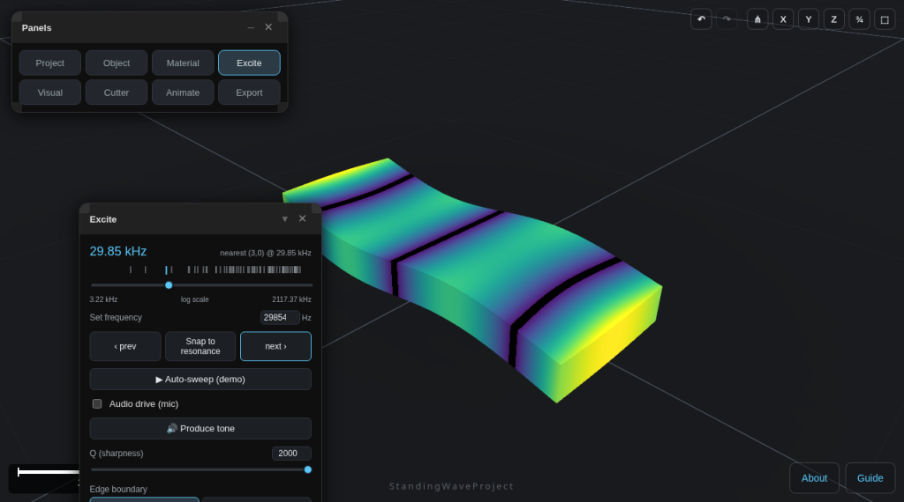
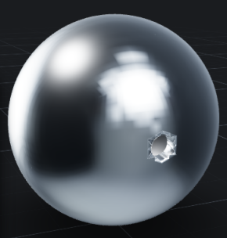

Archive · Possible future experiment
Experiment H: scalar-wave strip transmitter and detector (TinySA Ultra)
A thin electroded strip (PVDF film or a BST beam) is driven by one TinySA Ultra and an identical strip inside a closed Faraday cage is read by another. Ordinary electric, magnetic, acoustic and vibration coupling must be measured and ruled out first. The default expectation is a null result. This page is not on the Round 1 schedule.
Labels: fact quoted from a cited source or tool output, derived our own calculation from stated assumptions, assumption an input value we chose, hyp a hypothesis we would be testing. Draft prepared by Grok Bot for Dan Britton, 7 Oct 2026. Numbers come from our own estimates and the Simulation Lab feasibility model (Python, published sources only).
- 1 Idea
- 2 Scalar wave idea
- 3 TinySA Ultra specs
- 4 Driving the strip
- 5 Configurations 1 to 3
- 6 Receiver
- 7 Layout and controls
- 8 Mobius strip
- 9 Config 4 (dropped)
- 10 Config 5 toroid
- 11 Simulation results
- 12 Standing Wave Project
- 13 Range and amplifiers
- 14 Modelling tools
- 15 Connections and soldering
- 16 Parts list
- 17 References
- 18 Derived values
- Acknowledgements
1. Idea in one paragraph
hyp Use a thin insulating strip with electrodes on both faces as the transmitter. Drive it electrically so it flexes or vibrates; the strain gradient (flexoelectric) or strain (piezoelectric) moves bound charge back and forth inside the insulator. A second, identical strip in a closed Faraday cage is the detector (reciprocity: the element that turns charge motion into strain should also turn the reverse process into a voltage). Ordinary E and B coupling should be blocked by the cage and checked with probes. Any residual signal that survives all controls would be a candidate for a non-classical channel. The default expectation is a null result.
2. The scalar wave idea, from the published papers
fact In the published extended electrodynamics papers (Hively and Loebl 2019 [4]; Hively and Land 2021 [5]) the Lorenz condition is not imposed. That leaves a dynamical scalar field, written in the 2019 paper as C = div A + (1/c²) ∂Φ/∂t (A is the vector potential, Φ the scalar potential). Its wave equation is driven by the charge-balance term ∂ρ/∂t + div J (Hively and Loebl 2019, Eq. 25). The same paper (Section VII) describes a scalar-longitudinal wave (SLW) and a separate scalar wave with E = 0.
This experiment uses only that generic picture. It does not depend on any equation beyond it, and it does not assume the theory is right.
hyp Why a strip: bending or straining an insulator moves bound charge inside it with no conduction current loop. Our hypothesis, not a claim in the published papers, is that such bound-charge motion could act as a source of C. If it does, a strip is a compact, electrically simple source and, by reciprocity, also a sensor.
3. TinySA Ultra: the specs that matter
fact Quoted from the official tinysa.org wiki: Specification [1], Menu Tree [2], Limitations [3]. The original Ultra is HW V0.4.5.x; the Ultra+ is ZS406 (HW V0.4.6) and ZS407 (HW V0.5.3).
Signal generator
| Item | Official value | Source |
|---|---|---|
| Clean sine output | "Sine wave output with harmonics below -40dB of fundamental from 100kHz to 800MHz (900MHz for Ultra+)" | [1] |
| Above 800 MHz | "Cleanest signal mode: square wave, up to 4.4GHz (6 GHz for ZS407)"; "Highest accuracy mode ... up to 5.4GHz (7.3 GHz for ZS407)" | [1] |
| Output level | "selectable in 1dB steps between -115dBm and -19dBm" | [1], [2] |
| Level accuracy | "+/- 2dB up to 800Mhz between -72dBm and -19dBm, less accuracy below -72dBm" | [1] |
| Frequency resolution | "Output frequency resolution 57.2Hz" | [1] |
| Modulation | "AM or FM modulation frequencies between 50Hz and 5kHz (AM) or 1kHz (FM)" | [1], [2] |
| AM depth | "between 10% and 100%" | [1], [2] |
| FM deviation | "between 1kHz and 300kHz" | [1], [2] |
| Sweep | frequency sweep "over selectable frequency span"; "output level sweep over maximum the entire output level range"; menu has SPAN, LEVEL CHANGE, SWEEP TIME, SWEEP POINTS | [1], [2] |
| Battery | "at least 2 hours (3 hours for Ultra+)" | [1] |
Spectrum analyzer
| Item | Official value | Source |
|---|---|---|
| Input range | "from 100kHz to 800MHz (900 MHz for Ultra+) in normal mode and up to 6GHz (7.3GHz for ZS407) with ULTRA mode" | [1] |
| Below 100 kHz | "Below 0.1MHz the sensitivity starts to reduce." | [3] |
| RBW | "Resolution filters with a width of 0.2, 1, 3, 10, 30, 100, 300, 600 and 850 kHz"; "The minimum resolution bandwidth of 200Hz" | [1], [3] |
| Sensitivity | "Lowest discernible signal with LNA at 30MHz using a resolution bandwidth of 200Hz of -145dBm" | [1] |
| Input | "Input impedance 50 ohm when input attenuation set to 10dB or more"; "Maximum +/-5V DC input" | [1] |
| Audio | "Headphone output for listening to the demodulated audio (AM only)" | [1] |
| Zero span | ZERO SPAN mode exists (span 0 Hz at a set center) | [2] |
What this means (our reading):
- The generator cannot make audio or low kHz directly. Its lowest clean sine is 100 kHz. AM and FM only exist as modulation on a carrier (AM rate 50 Hz to 5 kHz).
- derived The maximum sine level is -19 dBm: about 25 mV rms into 50 ohm (about 50 mV open-circuit EMF). That is small, so a passive voltage step-up or an amplifier helps (section 13).
- The analyzer does not see audio-rate tones directly. An audio-rate modulation shows up as AM sidebands around the carrier, as a level variation in zero span, or by ear on the headphone output (AM only).
4. Can a TinySA Ultra drive the strip?
(a) Directly at a mechanical resonance: yes, if the resonance is at 100 kHz or above. That rules out the low bending modes of a long film strip (Hz to a few kHz) but allows several useful modes.
| Element (example) | Mode | First guess derived | Assumptions |
|---|---|---|---|
| PVDF film 28 µm, 20 x 100 mm | length extensional | about 6 kHz (too low) | bar speed about 1185 m/s (Y 2.5 GPa, density 1780 kg/m³) assumption |
| PVDF film cut 5 mm wide | width extensional | about 120 kHz | same |
| PVDF film 28 µm | thickness mode | about 39 MHz | thickness sound speed about 2200 m/s assumption |
| PVDF film 52 µm | thickness mode | about 21 MHz | same |
| SrTiO3 or BST beam, 0.5 mm thick, 2 mm free length, clamped | first bending mode | about 100 to 145 kHz | f1 = 0.1615 t v / L², v about 5000 to 7200 m/s assumption |
These are starting points only. The real resonance must be found by sweeping.
(b) As a GHz carrier AM-modulated at the resonance: not useful by itself. A strip cannot follow a GHz field mechanically, and a linear dielectric does not demodulate. The strip would only feel the envelope if something nonlinear in the path rectifies it (a diode junction, a contact, electrostriction, heating). That adds a classical demodulation path you would then have to rule out, and the AM rate tops out at 5 kHz, below most useful resonances. Keep it only as a deliberate control.
Strip capacitance derived (parallel plate, εr = 12, C = ε0 εr A / t):
| Strip | Thickness | C | X at 120 kHz | at 300 kHz | at 1 MHz | at 39 MHz |
|---|---|---|---|---|---|---|
| 20 x 100 mm | 28 µm | 7.6 nF | 175 ohm | 70 ohm | 21 ohm | 0.5 ohm |
| 20 x 100 mm | 52 µm | 4.1 nF | 325 ohm | 130 ohm | 39 ohm | 1.0 ohm |
| 20 x 5 mm | 28 µm | 0.38 nF | 3.5 kohm | 1.4 kohm | 420 ohm | 11 ohm |
| 5 x 5 mm electrode | 28 µm | 95 pF | 14 kohm | 5.6 kohm | 1.7 kohm | 43 ohm |
A full 20 x 100 mm PVDF strip is not a high-impedance load at a few hundred kHz; it is close to 50 ohm there. It only becomes high impedance at low frequency or when the electrode is small.
5. Configurations 1 to 3
Configuration 1 (start here): PVDF thickness mode, direct 50 ohm drive
- Strip: metallized PVDF, 28 µm (or 52 µm), with the active electrode trimmed to about 5 x 5 mm. For the leaded TE DT1-028K/L element, see section 11.
- Drive frequency: the measured thickness resonance, first guess about 39 MHz for 28 µm or about 21 MHz for 52 µm derived.
- Why: a 5 x 5 mm electrode is about 43 ohm reactive at 39 MHz, so the TinySA can drive it straight from the SMA port. The receiver works where the TinySA is most sensitive (its spec is quoted at 30 MHz). A copper mesh cage shields much better at tens of MHz than at 100 kHz. The thickness mode also has a large strain gradient across the film.
- Caveat: PVDF is piezoelectric, so most of its charge motion is piezo, not flexo. It is not a pure flexo test.
Configuration 2 (flexo-focused): stiff beam bending mode, about 110 kHz
- Strip: a centrosymmetric insulator with a known flexoelectric response: BST (Ma and Cross 2002 [7]) or a SrTiO3 single crystal (Zubko et al. 2007 [8]). Recommended form (section 11): a free-free 5 x 2 x 0.5 mm beam at about 109 kHz, held at its bending nodes, electrodes on both faces. Note that commercial 70/30 BST (Tc 33 °C) is ferroelectric, not paraelectric, at room temperature.
- Matching: a BST beam is 0.7 to 1.8 nF, so the 5 x 2 x 0.5 mm beam is about 820 ohm at 109 kHz and needs a 1.19 mH series tuning coil. Only SrTiO3 is down at a few hundred pF. A step-up transformer on a ferrite toroid rated for 100 kHz (1:3 or 1:4 turns) is an optional addition.
- Drive level: the Zeenko amplifiers in the kit give only about 5 dB at 100 kHz (section 13), so they do not help here.
Finding the resonance: use the generator SWEEP (SPAN plus SWEEP TIME) across the expected band with the receive strip, or the drive strip's own current through a small sense resistor, on the second TinySA, and pick the peak. Re-check inside the cage, since clamping and temperature move it.
Configuration 3 (not recommended)
GHz carrier with AM at the strip resonance. Keep only as a control that should show nothing unless a nonlinear element is present.
6. Receiver
- Second TinySA Ultra in spectrum analyzer mode, LNA on, on an identical strip (same material, size, clamp).
- Front end: for Configuration 1 a 5 x 5 mm strip is near 50 ohm at resonance, so a direct connection or a low-noise 50 ohm amplifier is fine (a Zeenko ZK06-UM ahead of the TinySA helps here, section 13). For Configuration 2 the strip is kohms, so put a high-impedance buffer at the strip: an ADA4817 FET-input op-amp follower (as modelled), a BF862 or J310 JFET source follower, or a charge amplifier, then a 50 ohm driver. Battery power, inside a small shielded box at the strip.
- Settings: center on the drive frequency, narrow span or zero span, RBW 200 Hz (the minimum), averaging on.
- Keying: switch the generator OUTPUT on and off on a fixed schedule (for example 30 s on, 30 s off, 20 cycles). A real coupling shows as an on/off difference that tracks the schedule. Log traces to SD.
- Averaging: compare the mean on level against the mean off level and its scatter. The rated floor is about -145 dBm with LNA at 30 MHz and 200 Hz RBW [1].
- Optional: slow AM (1 kHz, 100 % depth) on the drive, and look for sidebands at ±1 kHz. A sideband pair is a second fingerprint that the signal came from the generator.
7. Layout and controls
Layout: RX strip, buffer and RX TinySA on battery inside the closed Faraday cage. TX strip and TX TinySA outside at a fixed distance (or inside their own small shielded box, which is better). Nothing conductive through the cage wall. Read the RX display through the mesh or from the SD log afterward. Strips on separate tables with soft mounts.
Controls (each run logged):
- H10 magnetic probe at the RX strip position: must read nothing above floor with TX on.
- E-field probe at the RX strip position: must read nothing above floor with TX on.
- Dummy strip: replace the RX strip with a capacitor of the same value and lead layout (no mechanical response). Any signal that remains is electrical pickup.
- Source off and detuned: TX off; then TX on but well off the mechanical resonance. A strip mechanism should drop sharply off resonance; a leakage path will not.
- Strip swap: swap TX and RX strips (reciprocity), then swap in a non-active strip (unpoled PVDF, plain PTFE film with the same electrodes, or the uncut Mobius film below). Signal should follow the active material.
- Clamped strip: same RX strip glued rigidly to a block so it cannot flex.
- Vibration: run TX into a dummy load on the same table, and tap or shake test with a contact pickup. Separate tables and soft mounts.
- Acoustic: ultrasound in air at 100 kHz travels centimeters to meters. Test with an acoustic barrier (closed foam box) around TX and an ultrasonic microphone or spare strip as a monitor.
- Thermal: step the drive level and duty cycle; a thermal path responds slowly (seconds) and follows power, not frequency.
- No cage: repeat the run on the open bench at the same distance. With the caged run this measures the cage's attenuation. A caged signal only counts if it is far above what that attenuation predicts.
- Cage leakage calibration: in place of the strips, use a small loop and a small dipole at the same frequency to measure the cage shielding directly.
hyp What would count as interesting: a keyed on/off signal inside the closed cage that is above leakage predictions, disappears with the dummy, clamped and non-active strips, follows the mechanical resonance, survives the vibration, acoustic and thermal checks, and falls off with distance like a radiated wave (section 13).
8. Mobius strip: honest evaluation
| Idea | Physical mechanism? | Verdict |
|---|---|---|
| Mobius-wound loop or Mobius resistor (non-inductive) | Yes. Currents run in opposite directions in two closely spaced conductors, so the loop area and magnetic response cancel, like a bifilar coil or twisted pair. | Useful but ordinary. Good for B-rejecting leads or a pickup with very low loop area. A tight twisted pair does the same job. |
| Mobius metallized film strip | The two faces become one continuous surface, so the two electrodes become one. There is no voltage between faces to read. | Kills the normal flexo or piezo readout. Only useful as a "should read zero" control strip. |
| Built-in twist strain gradient | Partly. A twisted strip has a static strain gradient, which gives a static polarization, not a signal at the drive frequency. | May slightly bias the material. Does not replace the AC drive. |
Bottom line: the only physically useful Mobius element is non-inductive wiring for B rejection, and that is conventional. An uncut Mobius metallized strip is worth building as a control. Nothing in Mobius topology by itself predicts a scalar wave source.
9. Configuration 4: sphere collector driving the strip (evaluated and dropped)
- Idea: a metal sphere as the collector and the strip as a mechanical filter, read without wires.
- Collector: one of the two spheres on hand, inside the closed cage on an insulating stand: (a) the 3/4 in (19.05 mm) sphere with no hole, or (b) the 2.5 in (63.5 mm) hollow sphere with a 1/4 in hole in the bottom.
- hyp Proposed mechanism: a scalar wave arriving at the sphere would move charge on it at the wave frequency. No published source gives a sphere charge or current per unit of C, so this step has no number.
- Coupling: a short lead from the sphere to the active electrode of the receive strip; the strip's other electrode returns to the cage floor or a small counterpoise plate. Charge on the electrode would drive the strip by the converse flexoelectric or piezo effect.
- derived Self capacitance is about 1.06 pF (3/4 in) and 3.53 pF (2.5 in), much smaller than the strip (95 pF for a 5 x 5 mm PVDF electrode, 0.7 to 1.8 nF for the BST beam). That mismatch is why the chain loses.
- Readout (non-galvanic): optical lever with a split photodiode (beam mode), fibre or Michelson interferometer (PVDF thickness mode), or an ultrasonic pickup, all battery powered in their own shielded box.
- Baseline it was compared against: sphere into an ADA4817 or BF862 buffer into TinySA #2, same position, same TX settings. That direct path won by 62 to 95 dB in minimum detectable charge.
10. Configuration 5: toroid A-source, Aharonov-Bohm geometry
Idea: a small toroidal coil gives a vector potential A outside its core with almost no B outside, the geometry of the Aharonov-Bohm experiments [9], [10]. Use it as a known-A test source for the probes.
- Source: a small toroidal coil inside the closed cage, driven by TinySA #1. TinySA #1 must run inside the cage on battery, or be fed over an RF-over-fibre link, because no cable may cross the wall. A 50 ohm series resistor at the coil keeps the load near 50 ohm. derived At -19 dBm the coil current is at most about 0.5 mA rms.
- derived Consequence: with source and receiver in the same enclosure, the cage gives no isolation. At 10 cm, ordinary pickup is +3 to +90 dB above the TinySA floor for the spheres and the bifilar coil (and -17 to +57 dB for the strip), over 0.1 to 800 MHz and all toroids modelled. It falls as the inverse cube of distance in the near field.
- Probes: either sphere, the bifilar coil and the PVDF strip, each near the toroid but not threading its hole, plus the H10 and E-field probes to map leakage. The 2.5 in sphere picks up about 5 to 7 dB more ordinary leakage than the 3/4 in sphere. Use 10 cm or more.
- fact Conventional EM, important: outside an ideal toroid B is zero but A is not, and at RF that A changes in time. Conventional theory then gives a real E field outside, E = -∂A/∂t, with no B (the Maxwell-Lodge effect [11]). Any loop that threads the hole is simply a transformer secondary. So this is a known-A source, but at RF it is also a known-E source, and that E is a calculable, classical signal.
- Null baseline (leakage): winding pitch and gaps leak B near the core; a helical winding acts as one extra turn around the major circumference (bring the return lead back along the core, or add a counter-wound layer); winding voltages make a small electric dipole near the hot end (a slotted copper foil shield reduces it).
- Controls: rotate the toroid about each axis; reverse it (a pure A coupling only changes sign, the hot-end E leakage moves); swap in a non-inductive 50 ohm dummy of the same lead layout; source off, then TinySA #1 into a 50 ohm load; shielded toroid (copper can); change distance (5 to 50 cm) and check the inverse-cube law; a calibration loop threading the core to confirm the drive.
- hyp Expected outcome: conventionally, the probes respond only to leakage plus the classical E = -∂A/∂t field, both calculable. For a toroid fed with ordinary charge-conserving current, the published Hively papers give no non-zero source term and no coupling coefficient, so the framework as published gives no number for this configuration. Anything reproducible beyond the classical prediction that survives the controls would be an unexplained observation, not a tested prediction.

Rendered with Bob Greenyer's O-Animator (starfire.tech).
The O-Animator renders a fractal set of tori (31 even at the lowest depth), the colours are its own shading, and the background particle cloud could not be turned off. Treat the picture as a qualitative illustration of A without B, not as a field map of a real coil.
11. Simulation results (Simulation Lab, 7 Oct 2026)
Python model, published sources only. It predicts no scalar-wave signal size, because no published source gives one. What it predicts is the ordinary background that a null or positive reading has to beat.
Configuration 1 (PVDF thickness mode)
- derived Works only with a small electrode, about 5 x 5 mm. Thickness resonance 38.97 MHz (28 µm) or 20.99 MHz (52 µm). The 5 x 5 mm electrode is about 42 ohm there (94.9 pF) and gets about 29.5 mV at -19 dBm straight from the TinySA. The full 20 x 100 mm strip is about 0.5 ohm, effectively a short.
- Optional series match: about 180 nH at 39 MHz.
Config 1 with the TE DT1-028K/L leaded element
- fact The part (TE data sheet): film 16 x 41 mm, electrode 12 x 30 mm, 28 µm PVDF, about 1.38 nF, d31 23 pC/N, riveted lugs and 300 mm 28 AWG leads, rated 0 to 70 °C.
- derived Find the resonance first: the silver ink and protective coating may pull the thickness resonance down to about 23 to 30 MHz, so sweep 10 to 50 MHz on the VNA before anything else.
- derived The full electrode is a near short: about 2.9 ohm at resonance, so only about 5 % of the TinySA's power gets in (about 2.9 mV across the film).
- derived Leads: the supplied 300 mm leads are 47 to 102 ohm reactive at 39 MHz. Cut them to 2 to 5 cm and twist them.
- RX: use the element as bought.
- TX, option 1: trim the electrode to about 5 x 5 mm. Ink removal is untested and there is a risk of shorting the faces, so try it on a sacrificial element first.
- derived TX, option 2: an L-match, about 708 pF shunt and about 35 nH series (the series value includes the lead), gives about 11 mV and 74 % of the power. Tune it on the VNA at the measured resonance.
- Plan for 5 elements: #1 RX, #2 TX, #3 trim trial, #4 spare, #5 shorted control.
- Dummy: copper tape electrodes on polyester film plus a C0G capacitor to match the capacitance (no mechanical response).
- derived Film modes: length 12.9 to 18.3 kHz, width 33 to 47 kHz. Both are below the TinySA's 100 kHz bottom end.
- derived Untrimmed TX leakage at 0.3 m: +37 dB above the TinySA floor with no cage, and -23 / -43 / -63 dB relative to the floor at 60 / 80 / 100 dB shielding (before any TX amplifier, section 13).
Configuration 2 (BST beam)
- derived Best as a free-free 5 x 2 x 0.5 mm beam at about 109 kHz (109.4 kHz first bending mode), held at the mode-1 nodes, 0.224 and 0.776 of the length (1.12 mm and 3.88 mm from one end), on the centreline. Leads attach on the same node lines, on the centreline.
- Series tuning coil 1.19 mH (wind it after measuring the beam's capacitance on the VNA). That gives about 0.5 V across the beam.
- The original 2 mm cantilever is too stubby (L/t = 4) for beam theory and cannot be checked in the Standing Wave Project.
- derived Twist mode: an independent torsion calculation (Saint-Venant bar, ν 0.35) puts the beam's (1,1) twist mode at about 144 kHz. Scaling the Standing Wave Project result gives about 170 kHz (section 12). We use 144 kHz as the conservative value; the real value is probably between the two. The 109.4 kHz drive is well clear: the 1.19 mH tuned circuit is 15 dB down at 144 kHz (19 dB at 170 kHz), and symmetric full-width electrodes cannot drive twist. Twist only couples in through asymmetry (off-centre leads, supports or epoxy dots, misregistered electrodes, a chipped edge). After mounting, sweep 100 to 200 kHz once: a strong second peak near 145 to 170 kHz means the mount or a lead is asymmetric.
Leakage and risks (Configurations 1 and 2)
- derived With the cage at 80 dB shielding or better, ordinary leakage is below the TinySA floor at 0.3 to 3 m. At only 60 dB, the BST setup at 0.3 m sits right at the floor.
- The main risks are not radio leakage:
- 110 kHz sound through the mesh (upper bound +27 dB above the floor at 0.3 m; a solid 0.5 mm steel wall would cut it to -39 dB).
- Table vibration (about 133 dB of mechanical isolation needed: separate stands, soft mounts, node supports).
- Cage seams and the real shielding number at the test frequency.
- RX fully inside the cage on battery, with no cable through the wall.
Configurations 4 and 5
- Configuration 4: dropped. 62 to 95 dB worse than the direct sphere-to-buffer path (section 9).
- Configuration 5: TinySA #1 must be inside on battery or fed by fibre, so the cage gives no isolation. Ordinary pickup at 10 cm is +3 to +90 dB above the floor (section 10).
Spheres
- derived Self capacitance: 1.06 pF (3/4 in) and 3.53 pF (2.5 in). Hollow or solid makes no difference; the 1/4 in hole changes it by only 0.0053 %.
- derived Wired straight to the buffer, the small sphere is better for a charge-like source (0.019 vs 0.029 aC/√Hz) and the big sphere is about 7 dB better for a voltage-like source (18.1 vs 8.16 nV/√Hz). Which one matters is hypothetical.
- derived The 3/4 in shell's breathing mode is about 113 kHz (assuming a 1 mm brass shell assumption), only about 4 kHz above the 109 kHz beam drive. The 2.5 in shell has low modes at 13 to 33 kHz and a dense set near 100 kHz. Tap-test each sphere and soft-mount it before choosing the drive frequency. Wall thickness and material still need measuring. Update: vendor data gives both spheres as 3003 aluminium; FEM shell modes from imported meshes, and an aluminium breathing-mode estimate of about 146 kHz for the 3/4 in shell, are in section 12 (Hollow sphere modes).
Corrections to earlier estimates
- BST beam capacitance is 0.7 to 1.8 nF (εr about 104 near Tc), not "a few hundred pF". The smaller figure only holds for SrTiO3.
- Commercial BST (70/30, Tc 33 °C) is ferroelectric at room temperature, so it can carry a piezo response. Ma and Cross's 67/33 ceramic has Tc 21 °C. Keep the beam above Tc, or note the risk.
12. Standing Wave Project cross-check
Input: a free 50 x 20 x 5 mm steel plate in Bob Greenyer's Standing Wave Project. This is the 5 x 2 x 0.5 mm BST beam scaled up x10, because the app's minimum plate size is 20 mm. Steel was chosen because its bar sound speed is close to BST's (5170 vs 5323 m/s).
| Mode | SWP tool fact | Simulation Lab derived | Difference | Scaled to the BST beam |
|---|---|---|---|---|
| (2,0) first lengthwise bending | 10.75 kHz | 10.63 kHz (Euler-Bernoulli) | +1.1 % | tool x 10.291 = about 111 kHz; beam theory 109.4 kHz |
| (1,1) twisting | 16.51 kHz | 14.34 kHz (Saint-Venant torsion) | +15 % | tool scaled about 170 kHz; torsion calculation about 144 kHz (conservative) |
| (3,0) second lengthwise bending | 29.85 kHz | 29.31 kHz (Euler-Bernoulli) | +1.8 % | tool x 10.291 = about 307 kHz; beam theory 301.6 kHz |
Result: Bob Greenyer's Standing Wave Project independently confirmed the strip's (BST beam's) bending modes to within 2 % of the beam-theory values, and it located the clamp points: its mode-1 node lines, about 22 % of the length from each end, are where the beam is held and where the leads attach (1.12 mm and 3.88 mm on the real beam).
- The two bending modes agree with beam theory within 2 % (+1.1 % and +1.8 %), and the mode-1 node lines sit at about 22 % of the length from each end, matching the 0.224 / 0.776 support points.
- The twist mode differs by about 15 %. Simulation Lab's reading (not confirmed against the tool's code) is that a thin-plate twisting stiffness reads high for a bar only 4 times wider than it is thick. Torsion also scales with shear modulus, which moves the tool-scaled value to about 166 kHz for BST's Poisson ratio. The real value is probably 144 to 166 kHz.
- On the real beam: the drive mode is about 109 to 111 kHz, the twisting mode is 144 to 170 kHz (keep clear), and the next bending mode is about 302 to 307 kHz.

Computed with Bob Greenyer's Standing Wave Project (starfire.tech).

Computed with Bob Greenyer's Standing Wave Project (starfire.tech).

Computed with Bob Greenyer's Standing Wave Project (starfire.tech).
Hollow sphere modes (imported STL, FEM)
Bob Greenyer's Standing Wave Project imports user meshes (STL, OBJ or GLTF), needs no login, and solves true elastic eigenmodes of the imported geometry with its FEM engine. Both spheres were imported as hollow shells.
Method.
- STL meshes were built from vendor data:
- K-Mac KB-1820, 3/4 in (19.05 mm) 3003 aluminium hollow ball, closed. Wall 1.0 mm assumption, because the vendor does not list it. Download: kb1820-0.75in-closed-shell-1mm.stl
- K-Mac KB-2016, 2.5 in (63.5 mm) 3003 aluminium, wall 0.132 in (3.35 mm), 1/4 in bottom hole. Download: kb2016-2.5in-shell-3.35mm-quarter-inch-hole.stl
- The tool rescales every import to a 180 mm bounding box. For a uniformly scaled solid of the same material, frequency scales exactly as 1/size, so real f = tool f x (180 / OD): x 9.449 for the 3/4 in sphere and x 2.835 for the 2.5 in sphere.
- Both shells have the same wall-to-diameter ratio (about 5.3 %), so at the 180 mm size they are nearly the same shape. That is why the tool's numbers for the two nearly match.
- FEM resolution 403 (the in-browser limit), material Aluminium (rolled).
| Sphere | Modes | SWP tool (180 mm) fact | Real size derived | Note |
|---|---|---|---|---|
| 3/4 in (KB-1820) | 1 to 5 | 6.61 to 6.70 kHz | about 62.5 to 63.3 kHz | five-fold near-degenerate set, as expected for the n = 2 shell modes |
| 3/4 in (KB-1820) | 6 and 7 | 8.13 and 8.22 kHz | about 76.8 and 77.7 kHz | likely the n = 3 set |
| 2.5 in (KB-2016) | 1 to 5 | 6.59 to 6.69 kHz | about 18.7 to 19.0 kHz | n = 2 set |
| 2.5 in (KB-2016) | 6 | 8.05 kHz | about 22.8 kHz |
derived Cross-check. For a free spherical shell, the lowest n = 2 mode is at about Ω = ωR / cp ≈ 0.7, with cp = √(E / (ρ(1 − ν²))) ≈ 5.36 km/s for aluminium. That gives about 6.6 kHz at R = 90 mm, matching the tool.
Caveats.
- The coarse grid puts only about 2 voxels across the wall.
- The 3/4 in wall is assumed, but the n = 2 modes are mostly membrane-like, so they depend only weakly on thickness.
- Only the first 10 modes were computed. Modes near the 109.4 kHz Configuration 2 drive are not covered, so a tap test or sweep of the actual sphere is still recommended.
- derived The breathing (n = 0) mode of a 3/4 in aluminium shell is higher, at about 146 kHz (f = √(2E / (ρ(1 − ν))) / (2πR)). The 113 kHz figure in section 11 assumed a brass shell.

Computed with Bob Greenyer's Standing Wave Project (starfire.tech).
13. Range, the kit amplifiers and a distance test
hyp No absolute range can be predicted, because the strip's coupling to the scalar field is unknown. What can be stated is how much range each dB buys from wherever a signal is first seen. For a radiating wave with 1/r amplitude (1/r² power), power falls 20 dB per decade of distance: 6 dB doubles the range, 20 dB gives 10 times and 40 dB gives 100 times.
Does Hively's POUT formula apply to a strip? Not directly (our reading). Hively and Loebl 2019, Eq. 38 and Appendix B (as corrected in the erratum [4]), is derived for a thin end-fed wire monopole in the far field, with power set by the irrotational feed current. A strip is a capacitor with equal and opposite charge on faces 28 µm apart, closer to the balanced case of their Appendix C, which gives no SLW output; strain and the piezo effect do not appear in the formula; and at 109 kHz every bench distance is near field (kr ≫ 1 needs r well beyond about 440 m; at 39 MHz, beyond about 1.2 m). A wire monopole or a sphere fed against the coax shield is the case the formula was written for.
Kit: 3 TinySA Ultras and 3 Zeenko ZK06-UM LNAs
| ZK06-UM item | Value | Status |
|---|---|---|
| Frequency range | 10 MHz to 6 GHz | fact Zeenko datasheet |
| Gain | about 27 dB at 10 MHz, 25.5 dB at 100 MHz, about 5 dB at 100 kHz (below rated range) | fact datasheet |
| Noise figure | 2.3 dB at 10 MHz, 0.8 dB at 100 MHz | fact datasheet |
| Output P1dB | 16 to 18 dBm | fact datasheet |
| Gain at 39 MHz | about 26 dB | derived interpolated |
| Noise figure at 39 MHz | about 1.5 dB | derived interpolated |
- derived TX side at 39 MHz (Configuration 1): one amp takes TinySA #1 from -19 dBm to about +7 dBm, roughly 20 times the range under 1/r². Two in cascade would saturate near the 16 to 18 dBm compression point.
- derived RX side at 39 MHz: a Zeenko ahead of the TinySA, with the TinySA's internal LNA left on (about 6 dB noise figure), improves the system noise figure by about 4 to 5 dB, about 1.7 times the range.
- At 109 kHz (Configuration 2): the Zeenko is not useful (about 5 dB, below its rated range). Use the ADA4817 buffer there.
- derived Leakage rises with TX gain: +26 dB on TX lifts the untrimmed strip's leakage to about 3 dB above the floor at 60 dB of cage shielding, and about 17 dB below it at 80 dB. Get the cage to 80 dB or better before adding the TX amp.
Suggested use: a distance-falloff test
One amp on TX, and one ahead of each of two receiver TinySAs placed at distances r and 2r. derived A radiated wave falling as 1/r² drops 6 dB per doubling of distance. Near-field pickup and leakage fall much faster, about 12 to 18 dB per doubling. Measuring both receivers at once turns range into a test of its own: a signal that drops 6 dB fits a radiated wave; one that drops 12 to 18 dB is local coupling.
14. Modelling tools
- Bob Greenyer's Standing Wave Project (starfire.tech/StandingWaveProject): a browser FEM solver for elastic and acoustic modes (plates with free or clamped edges, spheres, imported STL, OBJ or GLTF meshes, Chladni nodal lines; materials include metals, quartz and PZT). No electromagnetics, no login. Used for the beam cross-check and the hollow-sphere modes in section 12. Limits:
- Hollow spheres are not a built-in preset, but it imports user meshes (STL, OBJ or GLTF), needs no login, and solves true elastic eigenmodes of the imported geometry with its FEM engine. Hollow-sphere results for both spheres are in section 12 (Hollow sphere modes).
- No cantilever (one-edge clamped) option, no BST or PVDF material, and a 0.5 mm minimum thickness, so the PVDF film cannot be checked there.
- Bob Greenyer's O-Animator (starfire.tech/O-Animator/Art-n-Science): a fractal toroidal-moment simulator (ring currents, ion tracers, magnetostatic A computed from J, pulsed E and B plates). Its A solve sets the scalar field C to zero by construction, and it has no RF, no cage and no materials. It can illustrate the toroid geometry of Configuration 5 (section 10) but cannot predict TinySA readings. It needs a sign-in with an email and an access key. The default particle count is heavy for a slow browser.
- Primary model: the Simulation Lab Python model (section 11).
15. Connections and soldering
- PVDF (TE DT1-028K/L): solder only to the part's leads, never to the film. The film is rated 0 to 70 °C, so an iron on it will destroy it.
- SrTiO3 and BST: no usable metal faces as supplied. Paint silver paint electrodes on both faces, then attach fine wire (25 to 50 µm) with a small dot of silver conductive epoxy on the mode-1 node lines, on the centreline. Do not solder.
- Copper: solders normally.
- Aluminium: ordinary solder will not wet it. Use aluminium solder with its matching flux, or silver epoxy.
- Spheres: material not confirmed. Brass or copper solder normally; aluminium as above; silver epoxy works on all of them.
16. Parts list
Availability not verified. Vendor names are for orientation only.
| Part | Qty | Notes |
|---|---|---|
| tinySA Ultra or Ultra+ (ZS406/ZS407) | 2 to 3 | Generator, analyzer, and a second analyzer for the distance test. In the kit (3). Official sellers on tinysa.org. |
| Zeenko ZK06-UM LNA, 10 MHz to 6 GHz | up to 3 | In the kit (3). One on TX, one ahead of each RX TinySA at 39 MHz (section 13). Not for 109 kHz. |
| TE DT1-028K/L leaded PVDF element (TE 1-1002908-0) | 5 | 28 µm, riveted leads. See the DT1 subsection. Solder only to the leads. |
| Metallized PVDF film, 28 µm and 52 µm | optional | TE Connectivity (Measurement Specialties) piezo film sheets; PolyK Technologies also sells poled PVDF film. |
| Unpoled PVDF or plain PTFE film | 1 | Control strips; electrode with copper tape or silver paint. |
| BST ceramic beam 5 x 2 x 0.5 mm, or SrTiO3 single-crystal substrate (0.5 mm) | 2 to 4 | Configuration 2. BST is usually a custom ceramic; SrTiO3 substrates from MTI Corporation. Add a non-flexo dummy (for example alumina of the same size). |
| Silver conductive epoxy and silver paint | 1 each | Beam electrodes and wire attachment (section 15). |
| ADA4817 op-amp or BF862 JFET buffer | 2 | High-impedance receiver buffer, battery powered, inside the cage. One spare. |
| Series tuning coil, about 1.19 mH, Q 50 or better at 110 kHz | 1 | Configuration 2. Wind after measuring the beam's capacitance on the VNA. |
| L-match parts: C0G capacitors (about 500 to 1000 pF) and a short air-wound inductor (about 35 nH with the lead) | 1 set | Untrimmed DT1 TX at 39 MHz. Tune on the VNA. |
| Inductor, about 180 nH | 1 | Optional series match for a trimmed 5 x 5 mm electrode at 39 MHz. |
| Ferrite toroids rated for 100 kHz and magnet wire | 2 | Optional step-up transformer for Configuration 2. |
| Small shielded boxes (die-cast aluminium) | 2 | For the buffer and, ideally, the TX. |
| SMA cables, attenuators, DC block | assorted | |
| H10 magnetic probe, E-field probe | 1 each | Already on hand. |
| Foam, soft mounts, second table, fine-wire node supports | Vibration and acoustic isolation (about 133 dB needed). | |
| USB battery packs | 2 | Run the RX TinySA and buffer fully inside the cage (and TinySA #1 for Configuration 5). |
| Dummy element: copper tape on polyester plus C0G capacitor | 1 to 2 | Same outline, lead dress and capacitance as the strip, no mechanical response. |
| Ultrasonic microphone, around 110 kHz | 1 | Acoustic monitor for the sound path through the mesh. |
| Spheres: 3/4 in (no hole) and 2.5 in hollow (1/4 in hole) | 1 each | On hand. Configuration 5 probes and direct sphere-to-buffer receivers. Tap-test and soft-mount. |
| Small RF toroid cores and magnet wire | 2 to 3 | Configuration 5 A-source. Run the return lead back along the core; twist the leads. |
| RF-over-fibre link, or a battery setup for TinySA #1 inside the cage | 1 | Configuration 5 drive. No coax through the wall. |
| Copper foil (slotted shield), 50 ohm non-inductive resistors, copper can | assorted | Configuration 5 E shield, dummy load and shielded-toroid control. |
| Laser, photodiode, interferometer optics | 0 | Not needed (they were the Configuration 4 readout, now dropped). |
17. References (published only)
- tinySA Ultra Specification: tinysa.org/wiki/pmwiki.php?n=TinySA4.Specification
- tinySA Ultra Menu Tree: tinysa.org/wiki/pmwiki.php?n=TinySA4.MenuTree
- tinySA Ultra Limitations: tinysa.org/wiki/pmwiki.php?n=TinySA4.Limitations
- L. M. Hively and A. S. Loebl, "Classical and extended electrodynamics," Physics Essays 32, 112 (2019), doi:10.4006/0836-1398-32.1.112; erratum Physics Essays 32, 417 (2019), doi:10.4006/0836-1398-32.3.417 (corrects Eqs. 38, 44, B5). PDF on this hub.
- L. M. Hively and M. Land, "Extended electrodynamics and SHP theory," J. Phys.: Conf. Ser. 1956, 012011 (2021), doi:10.1088/1742-6596/1956/1/012011. PDF on this hub.
- P. Zubko, G. Catalan, A. K. Tagantsev, "Flexoelectric Effect in Solids," Annu. Rev. Mater. Res. 43, 387 (2013), doi:10.1146/annurev-matsci-071312-121634
- W. Ma and L. E. Cross, "Flexoelectric polarization of barium strontium titanate in the paraelectric state," Appl. Phys. Lett. 81, 3440 (2002), doi:10.1063/1.1518559
- P. Zubko et al., "Strain-Gradient-Induced Polarization in SrTiO3 Single Crystals," Phys. Rev. Lett. 99, 167601 (2007), doi:10.1103/PhysRevLett.99.167601
- Y. Aharonov and D. Bohm, "Significance of Electromagnetic Potentials in the Quantum Theory," Phys. Rev. 115, 485 (1959), doi:10.1103/PhysRev.115.485
- A. Tonomura et al., "Evidence for Aharonov-Bohm effect with magnetic field completely excluded," Phys. Rev. Lett. 56, 792 (1986), doi:10.1103/PhysRevLett.56.792
- G. Rousseaux, R. Kofman, O. Minazzoli, "The Maxwell-Lodge effect: significance of electromagnetic potentials in the classical theory," Eur. Phys. J. D 49, 249 (2008), doi:10.1140/epjd/e2008-00142-y
- L. M. Hively, US Patent 9,306,527 B1 (2016), scalar-longitudinal waves. PDF on this hub.
- TE Connectivity / Measurement Specialties, DT Series Elements with Lead Attachment, data sheet (DT1-028K/L w/rivets, 1-1002908-0).
- Zeenko ZK06-UM LNA datasheet: storage.eleshop.eu/files/ZeenkoLNAdatasheet.pdf
- M. Hahn, S. Trolier-McKinstry, R. J. Meyer, J. Appl. Phys. 129, 064504 (2021), doi:10.1063/5.0038756 (BST 70/30 properties, Tc 33 °C)
- W. C. Young, R. G. Budynas, Roark's Formulas for Stress and Strain, 7th ed., Table 10.1 (Saint-Venant torsion constant)
- B. Greenyer et al., Standing Wave Project: starfire.tech/StandingWaveProject; O-Animator: starfire.tech/O-Animator/Art-n-Science (access key required)
18. Derived values and assumptions (summary)
- PVDF relative permittivity 12. Parallel plate capacitance, edge effects ignored.
- PVDF bar sound speed about 1185 m/s (Young's modulus 2.5 GPa, density 1780 kg/m³); thickness sound speed about 2200 m/s. Resonance first guesses follow f = v / (2 x dimension).
- Cantilever first bending mode f1 = 0.1615 t v / L², with v of 5000 to 7200 m/s for BST and SrTiO3. Free-free beam numbers use Euler-Bernoulli theory; the twist mode uses Saint-Venant torsion with E 161 GPa and ν 0.35 for BST.
- -19 dBm into 50 ohm = about 25 mV rms.
- Sphere self capacitance C = 4πε0R (outer radius; same for hollow or solid): 3/4 in (R = 9.525 mm) about 1.06 pF; 2.5 in (R = 31.75 mm) about 3.53 pF.
- Toroid drive: -19 dBm (about 50 mV open-circuit EMF behind 50 ohm) gives at most about 0.5 mA rms.
- Sphere shell modes assume a 1 mm brass wall (not measured).
- Amplifier gain and noise figure at 39 MHz are interpolated from the datasheet points at 10 and 100 MHz.
- All resonances must be measured; none of the above is a measured value.
Acknowledgements
Thanks to Bob Greenyer for two tools used on this page: the Standing Wave Project, which cross-checked the beam modes and support points (section 12), and the O-Animator, which made the toroid A and B illustration (section 10).